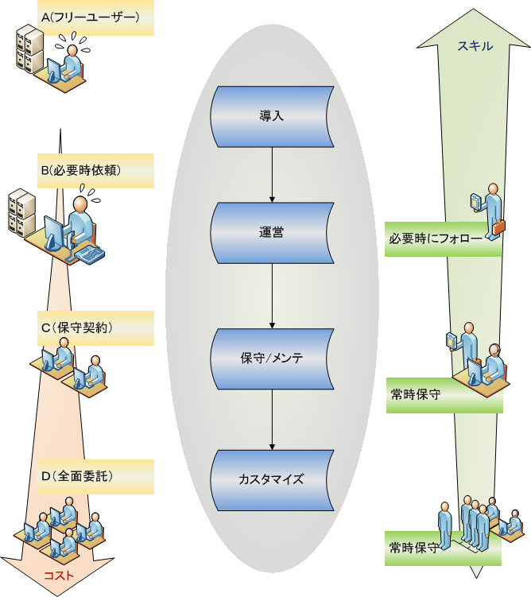

はじめに
ANNYYS_D版は、ANNYYS®のコンセプト「いつでも、だれでも、どのようにでも」を引き継いで創られた、FileMakerプラットホームで動く電子カルテソリューションです。
ANNYYS_D版を正常に動かすには簡単ないくつかの準備が必要ですが、これらはパソコンを扱う基本的な経験があれば誰でも行う事が可能です。またダウンロードしたファイルの中には全ての必要なファイル類が揃っていますので本文以下にある「ANNYYS_D版の特徴」をご覧いただき、まずはANNYYS_D版の「セットアップ」を参照しご自分の環境に合わせた準備を行ってください。
準備ができればANNYYS_D版はすぐに利用を始められます。使っていく中で詳しい操作方法が知りたくなればANNYYS_D版の「操作マニュアル」から目的の項目を探して参照してください。
ANNYYS_D版を使い続けているうちに「こういう機能があったらな」とか「こうなっていればいいな」と感じる事があると思います。ANNYYS_D版はこのような要望に合わせたカスタマイズが安全に行えるように設計されています。カスタマイズするには次の２つ方法があります。
最初はANNYYS_D版パートナーディベロッパに依頼するという方法です。ANNYYS_D版のカスタマイズ要望に応える事が出来るFileMakerディベロッパは全国に存在します。ANNYYS_D版事務局にお問い合わせ頂ければご要望の内容をお伺いし予算や適切なディベロッパをご紹介できます。パートナーディベロッパはウェブサイト(http://dev.annyys.net)からも検索できます。
次に「自身でカスタマイズ」するという方法です。ANNYYS_D版のベースとなっているFileMakerという製品は「誰でも簡単に扱える」特徴があるデータベースソフトウェアです。ちょっとした画面レイアウトの変更であれば誰でもすぐに実行可能です。少し勉強すれば短時間でプログラマーがつくったようなソリューションを作る事ができます。医療業界においては特に日本ユーザーメード医療IT研究会（略称J-SUMMITS: http://www.j-summits.jp/）では多くの医療現場における事例の紹介されており、実に多くの医療関係者の方々が自分のスタイルに合ったシステム構築事例が見つかります。
FileMaker日本法人http://www.filemaker.co.jp/)においても各種セミナーや講習会が全国で行われていますので、勉強・相談できる機会はいつでもあります。ANNYYS_D版事務局ではITに関する専門的な知識を持たない方でもどうしたらそうできるかをご案内していますのでいつでもお問合せください。
既にFileMakerに関する深い知識と経験をお持ちの場合は「ANNYYS_D版の仕様」へ足を踏み入れたくなるかもしれませんこれにはプロの知識と技術のノウハウが含まれている貴重な資料です。また、ANNYYS_D版をカスタマイズするときや、現在抱えている問題の根本を解決するための具体的な資料としても大いに役立つはずです。一つ上のレベルでANNYYS_D版を管理できれば、それはソリューションの安定や安全性、さらにはソリューションの性能向上をもたらすことになるでしょう。
ANNYYS_D版の特徴
メンテナンス性
ANNYYS_D版はシステムのメンテナンスや改善が安全に行えるようになっています。通常業務から切り離すことのできないシステムはよほどの事がない限り運用を停止する事はできません。医療関係に特化した経験ではありますがANNYYS®では「稼働を止めずにメンテナンスを行う」事が求められてきました。そしてこれらを実現する手段を持っています。ANNYYS_D版は通常稼働を維持しながら必要最低限の影響で諸問題を解決する事ができます
この「安全にメンテナンスを行う」手法は「自分だけのカルテ」を実現するためのカスタマイズを行う場合にも役に立ちます。例えば機能向上のためのカスタマイズを行った後に新たな問題が発生してしまう事があります。そのとき「元の状態に戻し、いち早く原因と解決策を調査する」事重要になりますが、ANNYYS_D版はある簡単な約束事を実行してもらうだけでこのような作業を行う事ができます。ちょっとした事改修であれば問題ないように思えるかもしれませんが、このような事態は「よくある」事で小さい事が累積するともう元の状態に戻れなくなります。この問題は、最初はそれほど大きな問題ではありませんが、やがて問題が表面化しはじめます。そしてシステム管理には大きなストレスや負担がかかりシステムの維持費にも影響してきます。ファイル同士が密接に関係し合うFileMakerソリューションでは、ある一部の一部の変更でも全体に影響している可能性がよくあるからです。
ANNYYS_D版にはこれまでの経験とノウハウの蓄積から「安全性・機能性・拡張性」に優位な構造を持ち合わせています。
サポート
これは大きな問題でした。フリーウェアは無償で利用できるといった解釈が一般的です。しかし完全に利用者の責任においてのみその利用は認められています。ただ電子カルテのような専門的で法的にも縛りのある分類のものはどうしても細かなサポートが必要です。こういった問題の解決にとても多くの時間がかかってしましました。結果基本的には単純な事ですが無償からはじまり細やかな有償サービスを展開する事を目指すようにしました。ANNYYS_D版は「無償でのスタートもできる」という部分がANNYYS_D版の特徴です。
サポートといってもこれらは多岐におよびます。
パートナーディベロッパに機器類の調達～セットアップなどのサポートや各種サービスを委任できる体制とパートナ間でのコニュニケーションを構築する事がANNYYS_D事務局の行う事業の一つです。
医療情報化の分野ではまだまだ多くの工夫や知恵が必要だと感じています。
FileMakerのように分かりやすいプラットホームを基盤にして医師・医療関係者・ディベロッパのそれぞれが隔たりのない情報交換を行う事で新たな知恵や工夫が生まれ、このネットワークが強力なバックアップとして機能するようになる事をANNYYS_D版事務局は目指しています。
